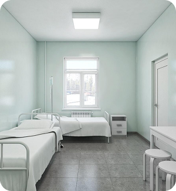
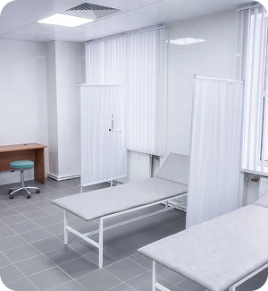
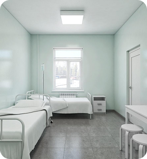
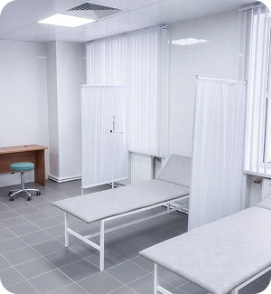

Наши услуги
Наркология
Диагностика наркологических расстройств
Наши наркологи проведут комплексное обследование для определения вида и степени наркологической зависимости.Медикаментозное лечение
Снятие абстинентного синдрома (ломки) Мотивация дает пациенту понимание, что выход есть, а профессиональная помощь значительно ускоряет и облегчает ломку (1).png)
Психиатрия
Диагностика психических расстройств
Наши психиатры проведут оценку вашего психического состояния и помогут выявить любые психиатрические расстройства, сопровождающие наркологическую зависимость.Лечение психиатрических симптомов
Мы предлагаем комплексное лечение, включающее медикаментозную терапию и психотерапевтическую поддержку, направленную на стабилизацию психического состояния.
Алкоголизм
Диагностика и консультации
Наши специалисты помогут вам определить степень алкогольной зависимости и разработать индивидуальный план лечения.Лечение алкогольной зависимости
Мы используем эффективные методики лечения, направленные на снижение желания потреблять алкоголь и поддержание трезвости.
Игровая зависимость
Диагностика и консультации
Наши специалисты помогут определить наличие игровой зависимости и ее влияние на вашу жизнь.Психотерапевтическое лечение
Мы предлагаем психотерапевтическую поддержку для разработки стратегий борьбы с игровой зависимостью и восстановления здоровых привычек.
Психотерапия
Индивидуальные и групповые сеансы
Наши психотерапевты предлагают разнообразные формы терапии, включая индивидуальные и групповые сеансы, направленные на решение конкретных проблем и поддержку в процессе выздоровления.Когнитивно-поведенческая терапия
Мы используем современные техники когнитивно-поведенческой терапии для изменения негативных установок и формирования здоровых поведенческих стратегий.
Реабилитация
Реабилитационные процедуры
Наша клиника предлагает широкий спектр физиотерапевтических процедур, направленных на восстановление физического здоровья и улучшение общего самочувствия.Социальная адаптация
Мы помогаем нашим пациентам восстановить социальные навыки и интегрироваться обратно в общество после завершения лечения.
Главный врач клиники
Бессмертный Вадим Андреевич
Врач нарколог-психиатр высшей категорииГлавный врач наркологической клиники, нарколог-психиатр высшей категории с более чем 11-летним опытом работы в области лечения зависимостей и психических расстройств.
В 2023 году Вадим Андреевич был назначен на должность главного врача наркологической клиники. Под его руководством клиника достигла новых высот, внедрив передовые методы лечения и реабилитации пациентов, основанные на последних достижениях мировой медицины. Он также уделяет большое внимание созданию комфортных условий для пациентов и поддержанию высокого уровня обслуживания.
Вадим Андреевич — это врач с большим сердцем, преданный своему делу и пациентам. Его главная цель — помочь каждому, кто столкнулся с проблемой зависимости, вернуть радость и полноту жизни.
Запишитесь на бесплатную консультацию
Получите профессиональную наркологическую помощь и психологическую поддержку быстро, анонимно и круглосуточно
О клинике
Мы - профессиональная команда специалистов, посвятивших свою жизнь помощи людям, страдающим от различных зависимостей. Наша клиника специализируется на комплексном лечении алкогольной, наркотической, игровой и других зависимостей мы предлагаем не только эффективное лечение, но и гарантируем поддержку и понимание на каждом этапе пути к выздоровлению.
В клинике работают квалифицированные врачи, психологи, психотерапевты, имеющие большой и успешный опыт работы в лечение зависимого поведения.
В нашем частном наркологическом центре пациенты получают курс физического восстановления, психологической помощи, физиотерапевтические и диагностические методы обследования и лечения. В ходе лечения врачи психиатры-наркологи, психотерапевты, психологи помогают избавиться от физической и психологической тяги к наркотическим и другим веществам
Обратившись к нам, вы делаете первый шаг на пути к выздоровлению и новой, полноценной жизни без зависимости.
 




Вы остановите свой выбор на нас потому что
1800+
пациентов
92%
пациентов
Прошедших наш курс лечения, находятся в устойчивой ремиссии
Врачи клиники
Наши врачи с многолетним опытом от 5-30 лет, постоянно проходят курсы повышения квалификации и успешно применяют новые методики при лечении различных видов зависимостей

Используем только
Современные методики лечения пациентов
После лечения и реабилитации в нашей медицинской клинике 76 % людей перестали употреблять психотропные препараты, они смогли начать новую жизнь без затуманенного сознания и вернуться к своим семьям и близким людям.Лучшие условия для наших пациентов
Частная наркологическая клиника специализируется на анонимном лечении алкоголизма и наркомании. Мы оказываем круглосуточную помощь людям, столкнувшимся с разными видами зависимости. Сопровождаем своих пациентов на всех этапах терапии, начиная с купирования абстинентного синдрома у наркозависимых и заканчивая кодированием, реабилитацией.
Уговорим Вашего близкого лечиться
Наш специалист с помощью эффективной методики убедит вашего родственника или друга пройти лечение от зависимости
Этапы лечения в наркологическом стационаре
Осмотр врачом наркологом
диагностика сердца, печени и др. органов
Постановка диагноза
Определение опасности состояния
Назначение лечения
Точный подбор медикаментов
Госпитализация в стационар
самостоятельно или трансфер до клиники
Очищение организма
восстановление работы внутренних органов
Бесплатная консультация
психиатра нарколога, рекомендации и др.